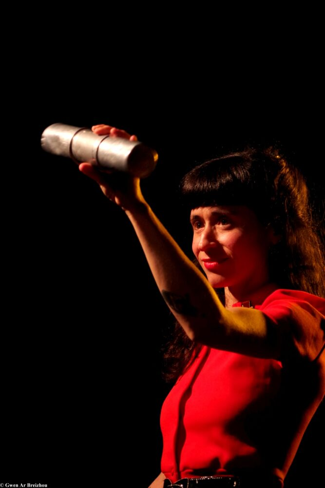

24h avec Forró à Lenha

Lieu : L'Appart, Saint-Nazaire
Le groupe de forró toulousain Forró à Lenha, avec Lucas Notaro, Isaac Paiva et Eduardo Vieira, rejoints par Céline Costa du groupe Forroscopics, pour un moyen-gros week-end forró.
Samedi 30 avril : la grosse soirée. Ouverture des portes à 20h, concert à 21h (8/10/15 €).
Dimanche 1er mai : ateliers et jam.